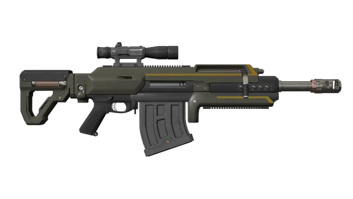

R-36 喷发者
R-36 Eruptor

弹药
容量
5
备用弹匣
6
Supply Box Refill
6
弹药箱 Refill
3
操控性
人体工学
25
后坐力
75
换弹时间
4.67s
“这种栓动步枪透过喷气辅助发射炮弹，炮弹触及撞击面时向四面八方崩裂碎片。不建议近战使用。
— 军械库 描述
R-36 Eruptor is a 主武器·爆炸物 发射喷气辅助弹药的武器，造成撞击、爆炸和弹片伤害。
获取途径
the R-36 Eruptor 在……的第2页解锁 民主爆破 尊享战争债券 for  60 奖章.
60 奖章.
配件
Any math should be done on values listed in the 详细武器数据 章节.
| Weapon | 类别 | 配件名称 | 解锁等级 | 解锁费用 | 效果 |
|---|---|---|---|---|---|
| Eruptor | 10x Sniper Scope | 武器等级 1 |  0 0
|
人体工学 -4, 变焦 50m • 100m • 200m | |
| Holographic Sight | 武器等级 3 | 5,000
|
变焦 25m | ||
| Reflex Sight Mk2 | 武器等级 9 | 7,000
|
变焦 25m | ||
| Iron Sight | 武器等级 12 | 7,000
|
人体工学 +5, 变焦 25m | ||
| 2x Tube Red Dot | 武器等级 19 | 13,000
|
人体工学 -1, 变焦 25m • 50m • 100m | ||
| 4x Combat Scope | 武器等级 24 | 25,000
|
人体工学 -2, 变焦 25m • 75m • 150m | ||
| 否 Underbarrel | 武器等级 1 | 0
|
|||
| Laser Sight W/ Flashlight | 武器等级 2 | 3,000
|
人体工学 -5 | ||
| Vertical Foregrip | 武器等级 8 | 3,000
|
人体工学 -5, 垂直后坐力 -20% | ||
| Angled Foregrip | 武器等级 14 | 5,000
|
人体工学 +5, 晃动 -25%, 垂直后坐力 +20% | ||
| 手电筒垂直前握把 | 武器等级 18 | 7,000
|
人体工学 -7, 垂直后坐力 -20% | ||
| Laser Sight Angled Foregrip | 武器等级 22 | 7,000
|
人体工学 +3, 晃动 -15%, 垂直后坐力 +20% |
战术信息
- 爆裂铳擅长每次射击造成毁灭性的范围伤害，但射速极低、弹药容量有限。
- 爆裂铳的喷气辅助弹药非常全能，既能造成重型单体伤害也能造成范围伤害，而且由于自推进特性，没有伤害衰减。
- 难缠的敌人会受到投射物撞击、爆炸和弹片伤害。这些伤害合计可以在一两发内消灭大多数中型敌人，具体取决于弹片分布和目标对爆炸的抗性。
- 弹片使爆裂铳在对付特定无装甲……时尤其有用 光能者 目标，例如 Fleshmob们和诸如……使用的大型能量护盾 Harvesters.
- 成群的小型敌人极其脆弱，因为它们同时受到爆炸和弹片伤害。这对付……尤其有效 终结族，一发即可消灭整支……巡逻队 Pouncers, Bile Spitters, or even 胆汁喷涌虫们，通过连锁反应。它也非常擅长清理虫族入侵，并摧毁悬挂在……底部的机器人 运输舰 在机器人空投期间。
- A 炮舰 可以通过瞄准其中一个引擎在两发内击落。（如果射击位置恰到好处地命中炮舰机身，有可能一发将其击落。命中引擎之间的侧面时似乎更稳定。）
- 爆裂铳的爆炸威力使其对任务目标非常有效。单发即可摧毁一个 虫穴，简化了……的清理 Bug Nests and 追踪虫 Lairs. It can also 消除 机器人 Fabricators and Bulk 构筑者们，通过命中其排气口，并击落 广播塔 一发解决。 Spore 喷吐者 and 尖啸虫 Nests 要求 as few as three shots.
- 难缠的敌人会受到投射物撞击、爆炸和弹片伤害。这些伤害合计可以在一两发内消灭大多数中型敌人，具体取决于弹片分布和目标对爆炸的抗性。
- 默认情况下，爆裂铳配备 10x Sniper Scope.
- 爆裂铳在远距离表现最佳，向未察觉使用者存在的敌人发射爆炸弹药，扮演手雷狙击手的角色。这对于保持目标距离，以及在目标的追击和闪避动作将其分散、导致更少目标被爆炸和弹片半径覆盖之前开火都很重要。
- 请注意，爆裂铳的弹药寿命为一秒，最大射程约180米，之后弹药会自动爆炸。这使该武器无法在极远距离狙击目标，但通常不是问题，因为在超过40-50米的距离接战目标已经为其带来强大的战术优势。
- 瞄准镜对于安全地摧毁敌人刷怪点尤其有用。站在虫族巢穴外缘，围绕周边移动射击虫穴，无需踏入一步就能将其清空；而对构筑者正面获得干净角度，则可以在不接战机器人哨站内任何敌人的情况下将其摧毁。
- 如果在拉动枪机后立即射击R-36爆裂铳，子弹会向左偏。切换到第一人称射击模式可以避免这种情况。
- 由于多种因素的综合作用，爆裂铳在近距离表现非常差。
- 与……的弩箭完全相同 CB-9 Exploding Crossbow，如果爆裂铳的弩箭未以垂直角度接触平面，它们也会在平面上“弹跳”，导致瞄低的弩箭滑过目标，在目标身后过远处爆炸。
- 由于落点处会产生爆炸和弹片，玩家通过射击附近目标很容易造成足以杀死自己的伤害。在尝试用爆裂铳火力支援队友时也应小心，因为在不当情况下，爆炸和弹片很容易造成误伤。
- 建议配备可靠的副武器或快速射击的支援武器来对付近距离敌人。诸如……的手枪 P-113 裁决 可以快速解决单个目标，而诸如……的机枪 MG-43 机枪 or M-105 盟友 兼具可靠性和续航能力。
- 诸如……的无人机背包 AX/AR-23 "Guard Dog" or AX/LAS-5 "Guard Dog" Rover 也非常有用，提供自动监视，并在大多数小型敌人成为问题之前迅速将其消灭。
- 爆裂铳的人体工学是出了名的差，因为它拥有显著的武器阻力。这使得它在快速转移瞄准时笨重难用，对使用者快速锁定目标的能力产生负面影响，尤其是在较近距离。
- the 巅峰体魄 和 坚韧不拔 护甲 passives 增加 ergo by 30 and 20, respectively.
- 利用 Iron Sights and an Angled Foregrip 非常有助于缓解该武器的这一特性，可将人机工学从11提升至35。
- 该武器低射速使其很难连续命中目标。每发都应精心瞄准以获得最大效果，而在近身混战中很难做出这样的判断。
- 战术装填最好在武器只剩一发子弹时进行，因为这样不会浪费弹药，还能跳过装填中的拉枪机环节。由于该武器战斗负载小，每一发都极其珍贵，把多余子弹留在被丢弃的弹匣里非常浪费。每发都有潜力摧毁敌人刷怪点或消灭成群的敌人。
琐事
- 爆裂铳似乎基于原型 巴雷特XM109 OSW（目标狙击武器），又称AMPR（反器材载荷步枪）。
- 记录……中变化的YouTube视频描述 补丁 01.003.000 错误地将爆裂铳列为“R-32爆裂铳”，而非 R-36 Eruptor.[1]
变更历史
补丁
描述
1.007.000
2026-08-12
修复
- 修复了装备2倍管状红点瞄准镜、在最大视野开镜装填下一发子弹时，镜头穿入R-36爆裂铳内部的漏洞。
1.006.001
2026-02-03
修复
- Fixed an issue where the R-36 Eruptor displayed 不正确 变焦 levels options when using non-zoomed scope 配件
1.003.000
2025-05-13
1.002.201
2025-03-25
修复
- Fixed an issue where shrapnel from 浮出地面-hits was forced in a roughly south-west 方向. Shrapnel should now properly fly out in a 180-ish 弧度 in the 方向 of the 浮出地面 hit
1.001.201
2024-10-29
未记录变更
- 更改了爆裂铳的射击音效。
1.001.100
2024-09-17
变更
- 重新引入了弹片。
- 用……替换了原来的弹片 Frag 手榴弹 弹片不再瞬间一击杀死绝地潜兵，除非偶尔倒霉被爆头。
- 还增加了弹片数量。
- 弹片投射物数量设定为30。
- 弹片伤害设定为110。
- 爆炸伤害从340降低至225.
- 爆炸半径提升33%（内半径提升17%，外半径提升50%）。
- 内半径从2米提升至4米。
- 外半径从6米提升至7米。
- 冲击波半径从6.5米提升至8米。
1.000.400
2024-06-13
变更
- 总伤害从每发420提升至570。
- 爆炸伤害从190提升至340，投射物伤害不变。
1.000.302
2024-05-07
变更
- 爆炸伤害提升40，并从爆炸中移除了弹片。
修复
- 修复了某些武器瞄准镜在第一人称视角中未对齐的问题。
1.000.300
2024-04-29
变更
- 爆炸伤害衰减略微提升。
- 最大弹匣数量从12个减少至6个。
修复
- 爆炸武器不再将玩家向爆炸中心拉扯。
1.000.202
2024-04-11
(Mid-补丁)
Addition
- Added to the game.
参考